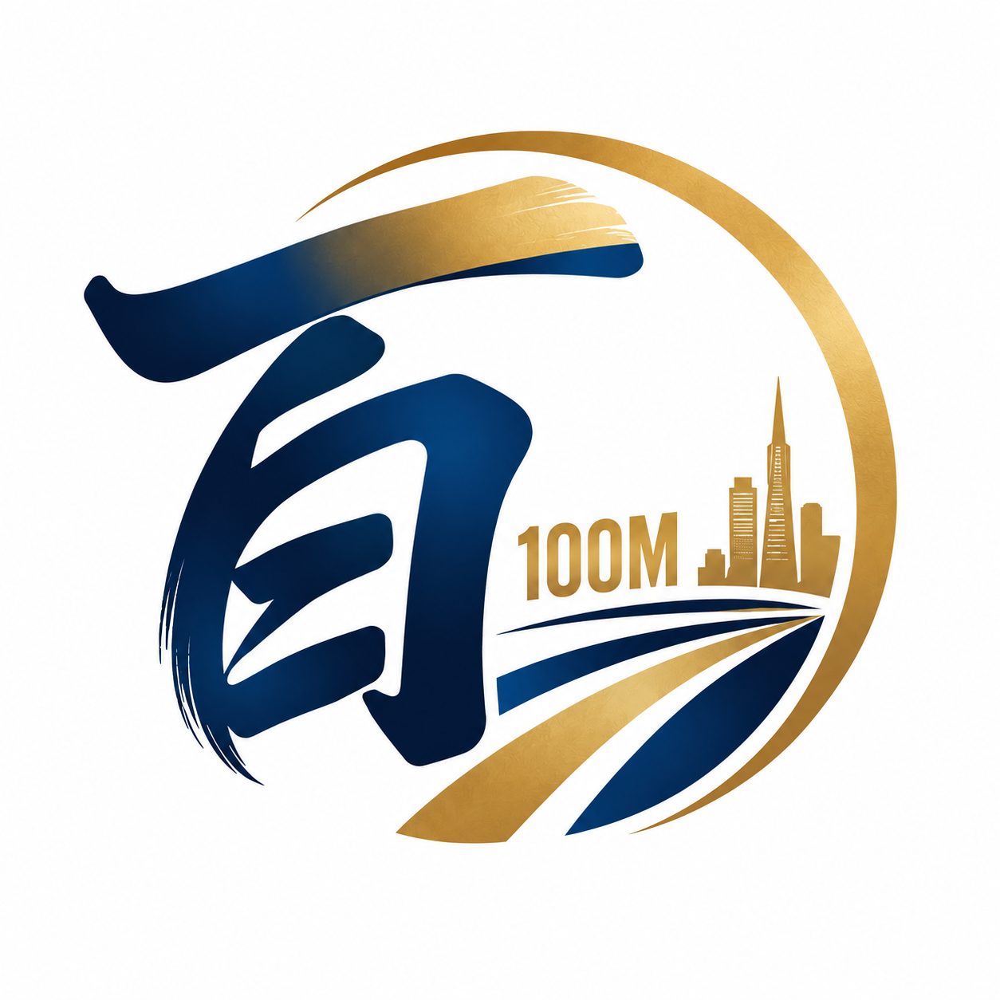

01深度交流
闭门私董会
与晚宴
小范围、不对外。会员之间讲真问题、给真建议，在坦诚交流中找到下一步。
真问题 · 真建议

硅谷百米会SILICON VALLEY 100M CLUB我们的目标，只有一个
“百米”取自 100M。
一个数字，承载一群创业者的共同追求。
1 亿美元估值，是一家企业从“活下来”到“立得住”的分水岭；也像百米赛跑，距离不长，拼的是起跑位置和爆发力。
硅谷百米会起源于 2015 年，把创业者、企业高管、投资人和出海企业主聚到同一张桌子上，让资本、经验与渠道真正流动起来。
人数不多，意味着彼此真正认识、真正信任。
让每一次交流，都有机会成为真实的合作。
带来项目与增长机会
分享管理经验与行业洞察
连接资金与长期价值
打开市场与渠道通路
互为上下游，也互为同行者。
小范围、不对外。会员之间讲真问题、给真建议，在坦诚交流中找到下一步。
让会员项目直接面对圈内投资人，以彼此信任为起点，缩短融资路径。
走进会员企业和硅谷一线公司，围绕具体需求，撮合客户、渠道与人才。
在信任的基础上，
让每一种资源找到合适的伙伴。
了解硅谷华人创业生态的一手窗口。对接有中美双向布局、回国落地意向的企业与项目，协助开展招商推介与实地考察。
在项目进入公开融资市场之前，提前接触经过圈内筛选的成长期企业。会员企业家与高管，也是优质的行业判断来源和潜在共同投资人。
直达创始人与技术决策人。在高信任度的闭门场景中介绍产品，让方案落到正处于高速增长、真实有采购需求的企业里。